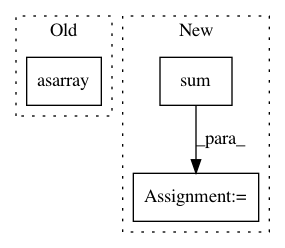

4461f2d4c1f140667b8fe9305efffb4351e54460,snntoolbox/simulation/target_simulators/INI_target_sim.py,SNN,simulate,#SNN#,112
Before Change
spike = 1
output_b_l_t[b, l, t] = spike
return np.cumsum(np.asarray(output_b_l_t, bool), 2)
def reset(self, sample_idx):
After Change
and sim_step % 1 == 0:
if self.config.getboolean("conversion", "use_isi_code"):
first_spiketimes_b_l = np.argmax(output_b_l_t, 2)
undecided_b = np.sum(first_spiketimes_b_l, 1) == 0
first_spiketimes_b_l[np.nonzero(np.sum(
output_b_l_t, 2) == 0)] = self._num_timesteps
guesses_b = np.argmin(first_spiketimes_b_l, 1)
else:
spike_sums_b_l = np.sum(output_b_l_t, 2)
undecided_b = np.sum(spike_sums_b_l, 1) == 0
guesses_b = np.argmax(spike_sums_b_l, 1)
none_class_b = -1 * np.ones(self.batch_size)
clean_guesses_b = np.where(undecided_b, none_class_b, guesses_b)
echo("{:.2%}_".format(np.mean(kwargs[str("truth_b")] ==
clean_guesses_b)))
if self.config.getboolean("conversion", "use_isi_code") and \
In pattern: SUPERPATTERN
Frequency: 3
Non-data size: 3
Instances
Project Name: NeuromorphicProcessorProject/snn_toolbox
Commit Name: 4461f2d4c1f140667b8fe9305efffb4351e54460
Time: 2017-10-25
Author: bodo.rueckauer@gmail.com
File Name: snntoolbox/simulation/target_simulators/INI_target_sim.py
Class Name: SNN
Method Name: simulate
Project Name: biolab/orange3
Commit Name: 088b10a9b6621472af54635e761bda0dd775836f
Time: 2012-09-26
Author: janez.demsar@fri.uni-lj.si
File Name: Orange/classification/majority.py
Class Name: MajorityLearner
Method Name: __call__
Project Name: brian-team/brian2
Commit Name: 9a44bfee4725073937dc2c96f1c89ca30bd641c8
Time: 2012-10-24
Author: marcel.stimberg@ens.fr
File Name: brian2/units/fundamentalunits.py
Class Name: UnitRegistry
Method Name: __getitem__